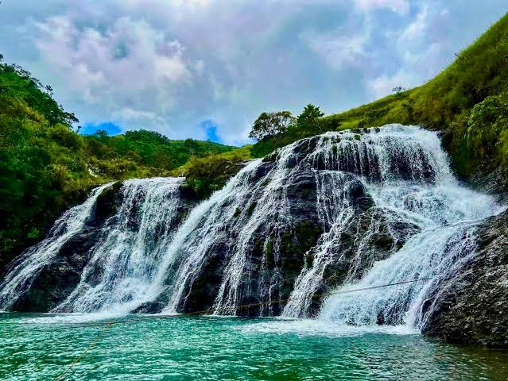
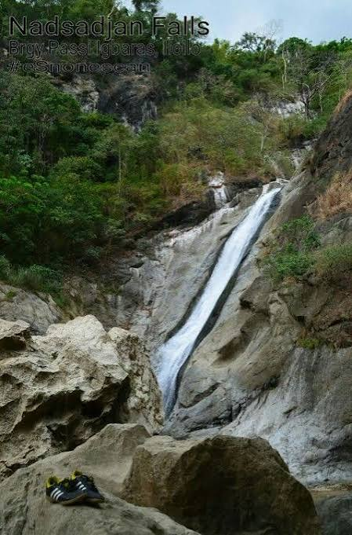
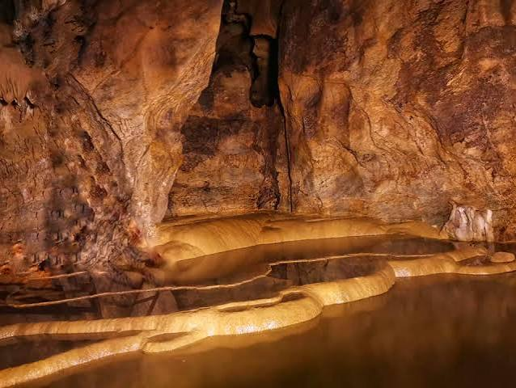
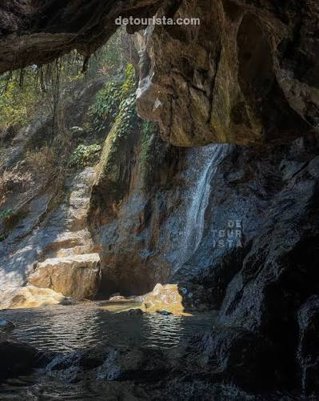
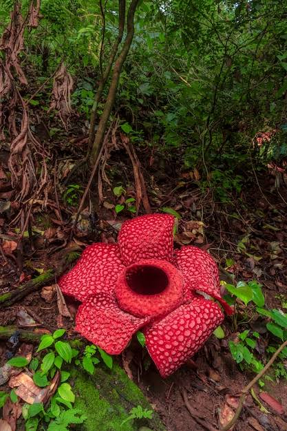

MT.PULANG LUPA
Mt. Pulang Lupa (also called Lupa Pula) is a scenic hiking and camping destination located in Sitio Butuan, Barangay Igcabugao, Igbaras, Iloilo, straddling the border with Tubungan.

GUIRITSAN FALLS
Situated 14 kilometers from the town proper, this cave features eerie, massive, church-sized chambers adorned with sparkling stalactites and stalagmites. Visitors can swim in its freezing underground river and explore its network of subterranean basins.

NADSADJAN FALLS
Nadsadjan Falls drops approximately 100 feet into a large, cold, cauldron-shaped natural basin.

IGCABUGAO CAVE
It features a massive, church-sized interior chamber with eerie and immense rock formations.

IGLIBOG FALLS
Iglibog Falls is a scenic 20-foot waterfall tucked inside a cave-like rock formation in Barangay Igcabugao, Igbaras, Iloilo, Philippines.

RAFFLESIA GARDEN
Rafflesia—the world's largest parasitic corpse flower. Tourists time their visits during blooming seasons to witness this exotic and giant botanical marvel.